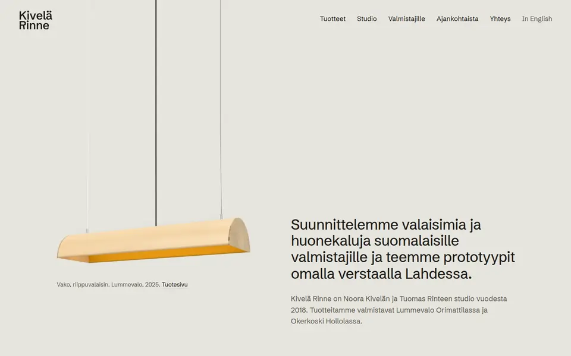
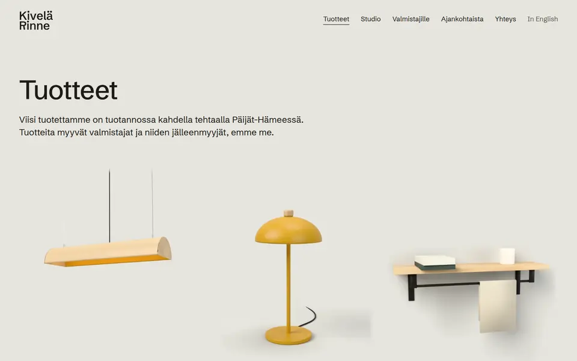
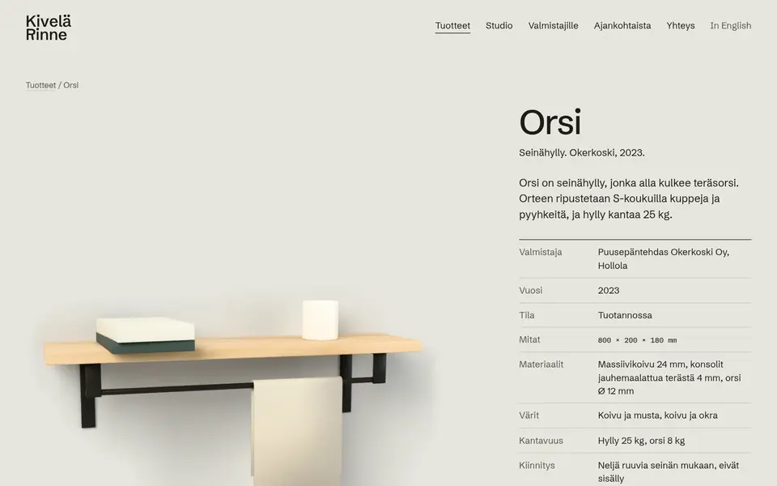
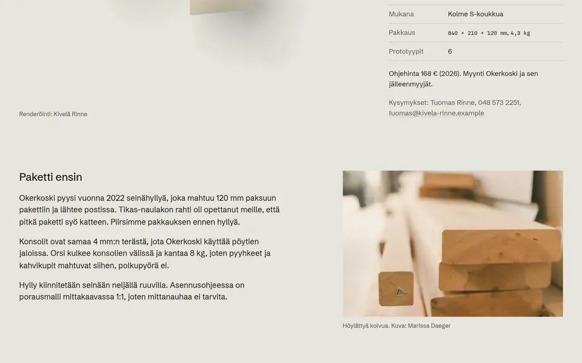
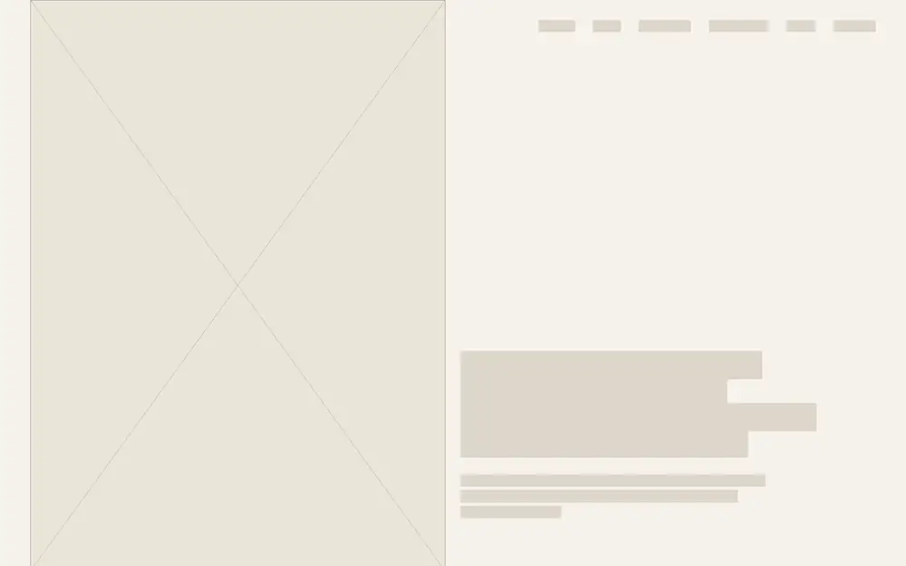
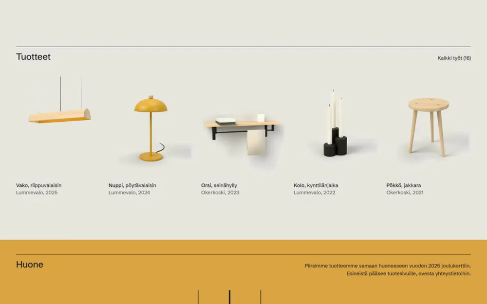
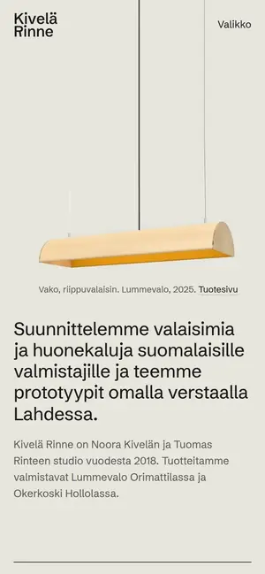
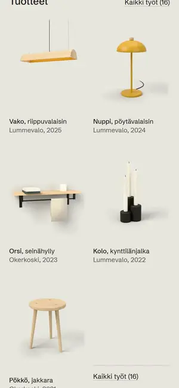
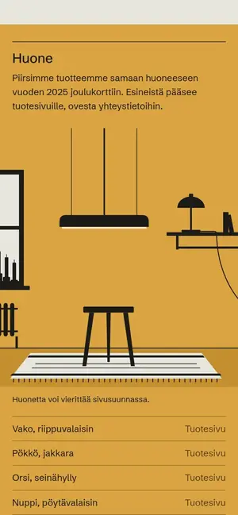
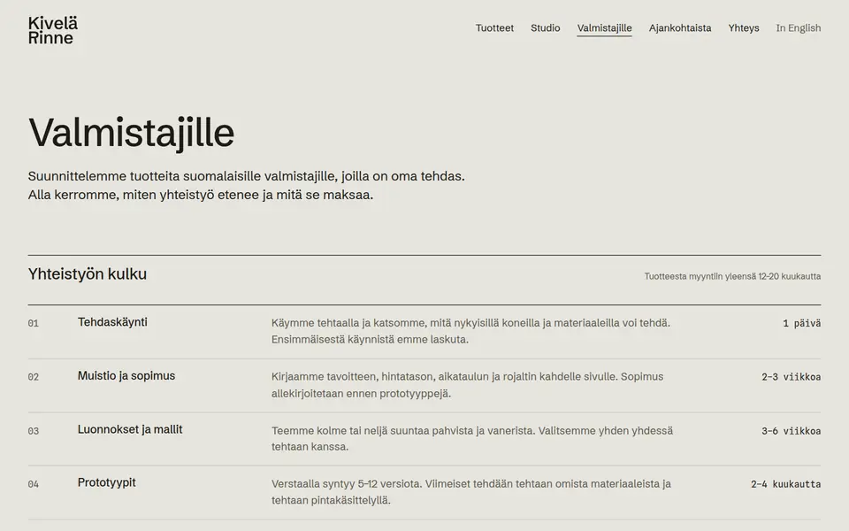

Työt 05
Kivelä Rinne
Tuotevastaava löytää kaiken.
- Ala
- Valaisin- ja huonekalumuotoilu
- Paikkakunta
- Lahti
- Työ
- Nimi, leima, ilme ja sivusto
- Sivusto
- 14 sivua, etusivu 0,2 Mt
Konsepti Kivelä Rinne on kuvitteellinen yritys, ja tuotteet ja valmistajat on keksitty sivustoa varten. Tein sivuston näyttääkseni, mitä muotoilustudion sivut voivat tehdä.

Lähtökohta
Kivelä Rinne on kahden muotoilijan studio Lahdessa. Se suunnittelee valaisimia ja huonekaluja suomalaisille valmistajille ja tekee prototyypit omalla verstaallaan. Sivuston tärkein lukija on tehtaan tuotevastaava, joka päättää, kenelle antaa kahden vuoden tuotekehityksen.
Kävin läpi kaksitoista muotoilustudioiden ja valmistajien sivustoa. Parhaat näyttävät kauniin tuotekuvan ja valmistajan nimen, mutta mitat, aikataulu ja yhteistyön ehdot puuttuvat lähes kaikilta. Ne halusin tälle sivustolle.


Ratkaisu
Etusivulla studion koivuvanerinen valaisin roikkuu sivun yläreunasta. Tuotekuvien tausta on tasattu samaan harmaaseen kuin sivu, joten tuotteet näyttävät olevan samassa tilassa. Jokaisella tuotteella on oma sivu, jossa ovat mitat, materiaalit, valmistaja, hinta, prototyyppien määrä ja aineistoluettelo. Valmistajille-sivulla on yhteistyön vaiheet kestoineen, rojalti ja prototyyppien hinnat.

Mitä sivusto tekee
Tuotevastaava löytää tarvitsemansa
Mitat, materiaalit, valmistaja ja prototyyppien määrä ovat jokaisella tuotesivulla.
Yhteistyön ehdot ovat valmiina
Vaiheet kestoineen, rojalti ja prototyyppien hinnat kertovat sopimuksen sisällön ennen ensimmäistä tapaamista.
Sivu aukeaa messuillakin
Etusivu painaa 0,2 Mt, joten se latautuu puhelimella heikossakin verkossa.


Toteutus
- Nimi, KR-leima, värit ja typografia
- Tuotesivut valmistajan tietokortteina
- Valmistajille-sivu vaiheineen, rojalteineen ja hintoineen
- Piirretty huone toisena reittinä tuotteisiin
Puhelimella valaisin roikkuu näytön yläreunasta otsikon yläpuolella, tuotteet ovat kahdessa sarakkeessa ja huonetta voi vierittää sivusuunnassa.




Tuotekuvat ovat 3D-mallinnuksia, ja muut kuvat ovat Unsplash-lisenssin alaisia kuvia, joiden kuvaajat mainitaan sivustolla.
Avaa sivusto